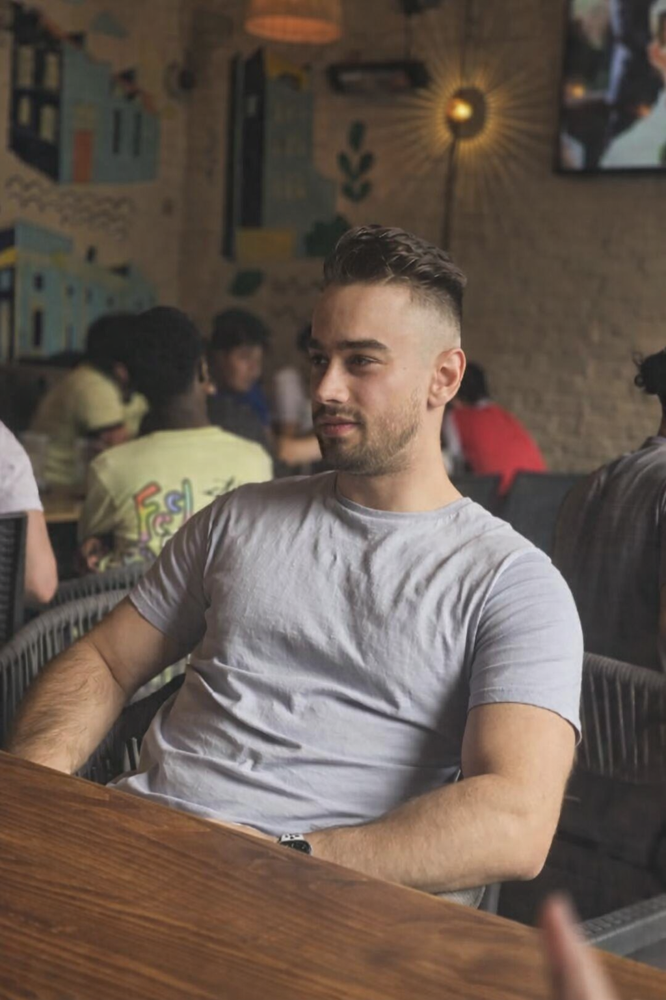

Game Dev Alumni to aspiring SOC Analyst

Hello 👋I'm currently building a series of prototypes that serve the purpose of developing the professional skills needed for a gameplay programming role and steadily working toward my dream of creating my own RPG.
I graduated from the University of Plymouth in 2021, worked for Sports Interactive as a QA Tester in 2022 and went on to work as a Build and Release Specialist for Ubisoft in 2024.
Professionally, I have extensive knowledge of the development pipeline within AAA development as well as extensive version control and software troubleshooting knowledge.
Currently exploring opportunities!
A TryHackMe write-up investigating brute-force, persistence, and web-shell attacks as a Level 1 SOC Analyst using Splunk SPL.
A TryHackMe write-up covering Email source analysis, Powershell Log Analysis, and decoding extracted data.
The next entry in the Boogeyman TryHackMe series.
Hello, My name is Casey Kusella-Gussin. As I am writing this, I am 29 years old and currently residing in London, United Kingdom.
I have been in love with video games my whole life and I have been blessed to work in AAA games for two and a half years with the hunger learn and develop still existing.
I gradutated from the University of Plymouth with a BSc Hons in Computing and Video Games.
My favourite video games either involve an intensive, urgent story like Mass Effect 2 and Star Wars: Knights of the Old Republic or a mind boggling set of game mechanics and systems such as RimWorld, Path of Exile and Crusader Kings.
Was it my fault?
Obviously!
The beginning of my love for RPGs
Eww
Never too old to be a kid
I still have the magazine I was featured in
I try to create a balanced lifestyle that doesn't involve me locked in my room all day programming, playing games or watching TV.
I love football — I've been an Arsenal fan since I was around 5 years old and have never regretted supporting them despite a lack of glory for 20+ years. I also frequently play football myself and have played since a child too!
I also maintain an active lifestyle and regularly train at the gym, reaching a peak bench of 150kg.
Second-Class Honours
Programming: C#, C++, Blueprints
Game Engines: Unity, Unreal Engine 5
Tools: Git (Administration), Perforce (Administration), Jira, Confluence
Specializations: Gameplay systems, UI systems, Game Modding, Engine workflows
Project description goes here.
Additional information about the project.